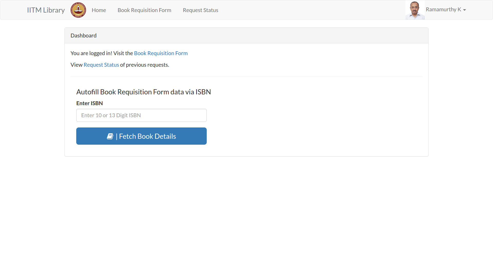
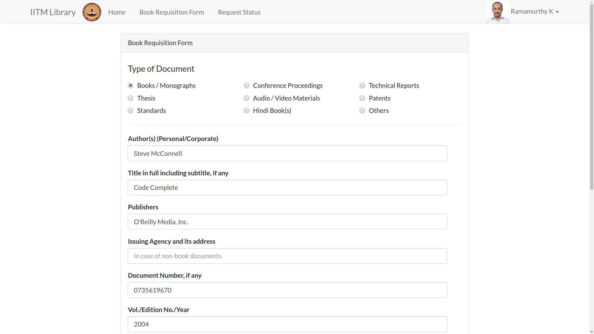
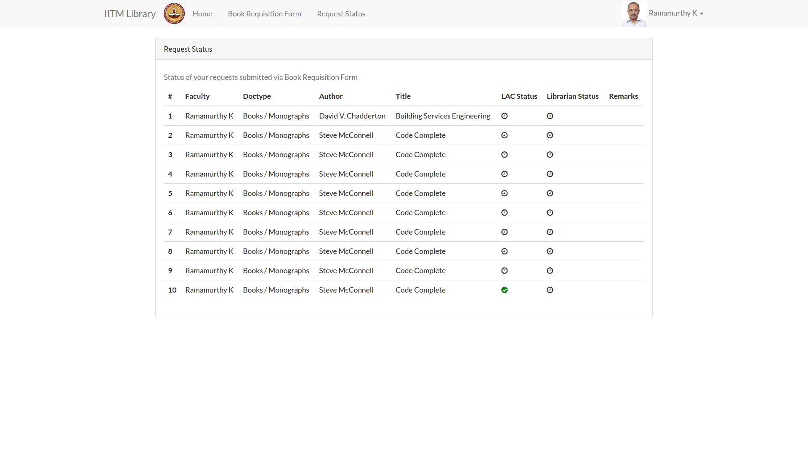

Documentation for Faculty¶
- Welcome to IITM Library Portal
- Production Server URL at https://books.iitm.ac.in/
Visit the IITM Library URL. Since you are not yet signed in, you will be redirected to the Login URL which is https://books.iitm.ac.in/login
Step 2 : Home Page¶
After Logging in, you will be taken to the Home page. You can enter the ISBN number on this page and it will automatically fetch the book details and take you to the Book Requisition Form. The Home page looks like this.
Step 3 : Book Requisition Form¶
After logging in, your top navigation bar will now show three links. * Home * Book Requisition Form * Request Status
Click on the Book Requisition Form link, to start the process for ordering your book. The Book Requisition Form looks like this
Note
If you have the ISBN number you can auto-fill these information by entering the ISBN number on the Home Page.
Step 4 : Request Status¶
After submitting the Book request, now visit the third link in the top navigation bar which says Request Status.
You can view the status of your request on this page. The page will look like this
Note
You need not keep checking the status again and again. You will be notified via E-mail once the request is approved/rejected by the Librarian.